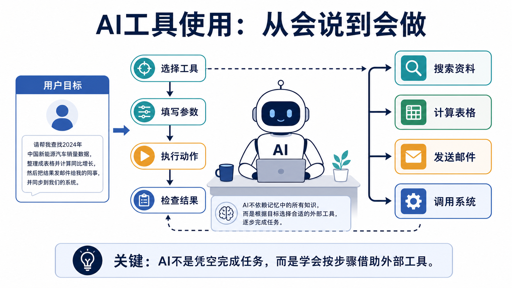
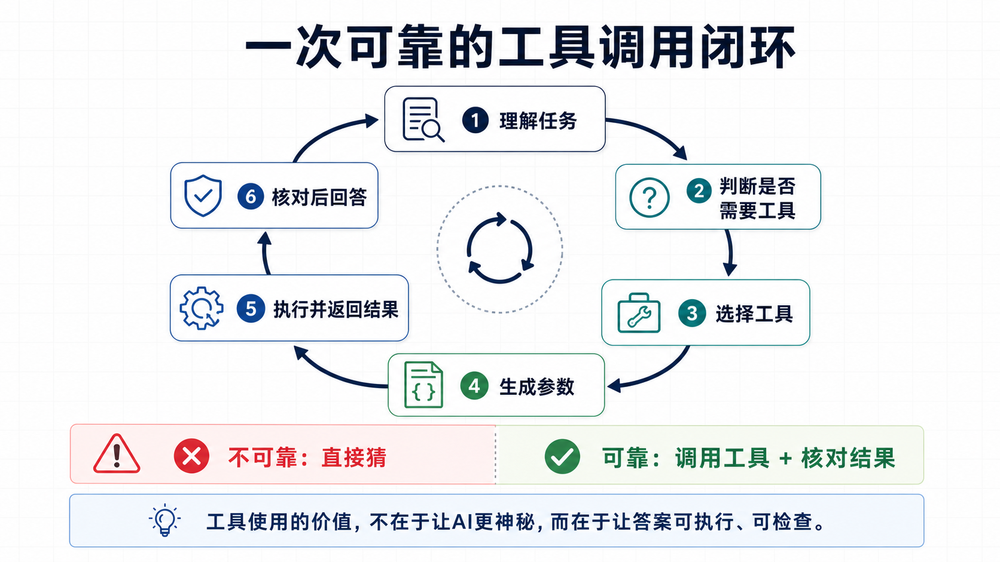

01
理解用户目标
AI 先把一句自然语言请求拆成目标、约束和成功标准。例如“帮我做销售分析”并不只是写几句话，而是可能需要读取数据、计算指标、生成图表。
为什么 AI 不只是会聊天，而是开始会查、会算、会操作、会核对？
让 AI 不再只凭记忆回答，而能访问真实数据、调用系统并完成动作。
AI 从“给建议的聊天框”，走向“能办事的协作系统”。
用“项目助理借工具办出差”的故事，理解工具选择、参数、权限和核对。
真正的 AI 应用，不只是把话说漂亮，而是能在真实世界里可靠地完成一部分工作。
只会聊天的 AI，像一个很会解释问题的人；会使用工具的 AI，才开始像一个能帮你办事的助手。它可以查资料、算表格、读文件、调用系统、发送请求，把语言理解变成现实动作。
这个概念重要，是因为大模型本身并不天然知道最新库存、你的日历、企业订单状态，也不能凭空完成转账、订票、生成报表。工具使用给 AI 接上外部世界，让它能在需要时访问正确的数据和能力。
今天的 Agent、企业 Copilot、AI 客服、数据分析助手、自动化办公系统，都离不开工具使用。没有工具，AI 容易停留在“给建议”；有了可靠的工具调用闭环，AI 才能从“回答问题”走向“完成任务”。
想象你让一位新来的项目助理安排一次出差。你说：请帮我查下周上海天气、估算预算、订会议室、把行程发给团队。如果这位助理只是坐在座位上凭记忆回答，他很可能说得像真的，却不一定准确。
靠谱的助理会做另一件事：先判断任务需要哪些工具，然后分别打开天气网站、日历系统、表格软件和邮件客户端。每一步都把你的自然语言要求，翻译成具体动作：查哪一天、算哪些费用、订哪个时间段、发给哪些人。
AI工具使用也是这个逻辑。模型不是把所有能力都塞进脑子里，而是学会在合适的时候借助外部工具。它像一个会读任务说明的调度员：先理解目标，再选择工具，填好参数，执行动作，最后检查结果是否真的满足目标。

工具使用不是“AI 想做什么就做什么”，而是一套从理解、选择、执行到复核的受控流程。
AI 先把一句自然语言请求拆成目标、约束和成功标准。例如“帮我做销售分析”并不只是写几句话，而是可能需要读取数据、计算指标、生成图表。
有些问题可以直接回答，有些必须查资料、算数字或操作系统。可靠的 AI 要知道什么时候该靠知识，什么时候必须借工具。
系统会从可用工具列表里选择一个或多个工具，例如搜索、数据库、表格计算、代码执行、邮件发送、日历查询。选错工具，就像拿锤子修表。
AI 把人的话翻译成工具能理解的参数。比如把“查最近七天订单”变成开始日期、结束日期、订单状态、输出字段。
读取公开资料和发送邮件的风险不同。涉及付款、删除、外发、隐私数据时，系统通常需要权限边界、人类确认或沙箱环境。
工具真正开始工作：查询数据库、运行代码、创建工单、发送请求。模型本身不等于工具，模型只是发出合规的调用指令。
工具返回的可能是表格、错误码、网页、文件或执行日志。AI 要把这些结果重新翻译成人能理解的答案。
最后一步不是立刻输出漂亮文字，而是检查工具结果是否完整、是否和目标一致、是否需要重试或说明不确定性。

| 术语 | 一句专业解释 | 一句白话解释 |
|---|---|---|
| Tool 工具 | 专业解释：供模型调用的外部能力接口，可以是搜索、数据库、代码执行器、业务系统或设备控制。 | 白话解释：AI 可以借用的“外部器械”，像计算器、地图、邮箱和企业系统。 |
| Tool Schema 工具说明书 | 专业解释：描述工具名称、用途、输入参数、输出格式和限制条件的结构化说明。 | 白话解释：工具的使用说明，告诉 AI 这个工具能干什么、要填哪些信息。 |
| Function Calling 函数调用 | 专业解释：模型生成符合函数参数格式的调用请求，由外部程序执行并返回结果。 | 白话解释：AI 写好一张标准工单，让程序去办事。 |
| API 接口 | 专业解释：软件系统之间交换数据、触发能力的一组规则和入口。 | 白话解释：不同软件之间的服务窗口，按格式递交请求就能办业务。 |
| Parameters 参数 | 专业解释：调用工具时必须提供的结构化输入，例如日期、地点、收件人、查询条件。 | 白话解释：填表格时的具体栏目，填错了工具就可能办错事。 |
| Tool Result 工具返回结果 | 专业解释：外部工具执行后的结构化或非结构化输出，包括数据、状态、错误和日志。 | 白话解释：工具办完事交回来的回执，AI 要读懂它。 |
| Human-in-the-loop 人类在环 | 专业解释：在高风险步骤中加入人工确认、审批或复核。 | 白话解释：危险按钮按下前，先让真人看一眼。 |
| Sandbox 沙箱 | 专业解释：把工具执行限制在隔离环境中，减少对真实系统和数据的影响。 | 白话解释：先在练习场试跑，别一上来就改真实系统。 |
| Idempotency 幂等性 | 专业解释：同一次操作即使重复执行，也不会造成重复扣款、重复发送等副作用。 | 白话解释：手滑点两次，也不应该办成两遍。 |
| Audit Log 审计日志 | 专业解释：记录谁在何时调用了什么工具、输入输出是什么、是否成功。 | 白话解释：办事留痕，出问题能回头查。 |
一个真实应用是企业里的 AI 数据分析助手。经理问：“帮我看一下上周华东区退货率为什么上升，并给我一段可发给团队的总结。”如果 AI 只靠语言能力，它最多能说一些泛泛原因；如果会用工具，它可以真的读取订单表、按地区和品类计算退货率、找出异常 SKU，再生成结论。
在这个过程中，AI 可能会先调用数据库查询工具，拿到上周和前一周的数据；再调用代码或表格工具计算同比、环比和分组占比；如果发现数据缺失，它还要说明缺口，而不是编一个原因；最后才把分析结果整理成经理能读懂的中文摘要。
物流客服也是类似逻辑。用户问“我的包裹为什么还没到？”工具使用让 AI 可以查询运单状态、读取路由节点、检查异常原因、创建工单，并在需要时提醒人工客服介入。它不是靠猜，而是把真实系统结果转化成可理解、可执行的服务动作。